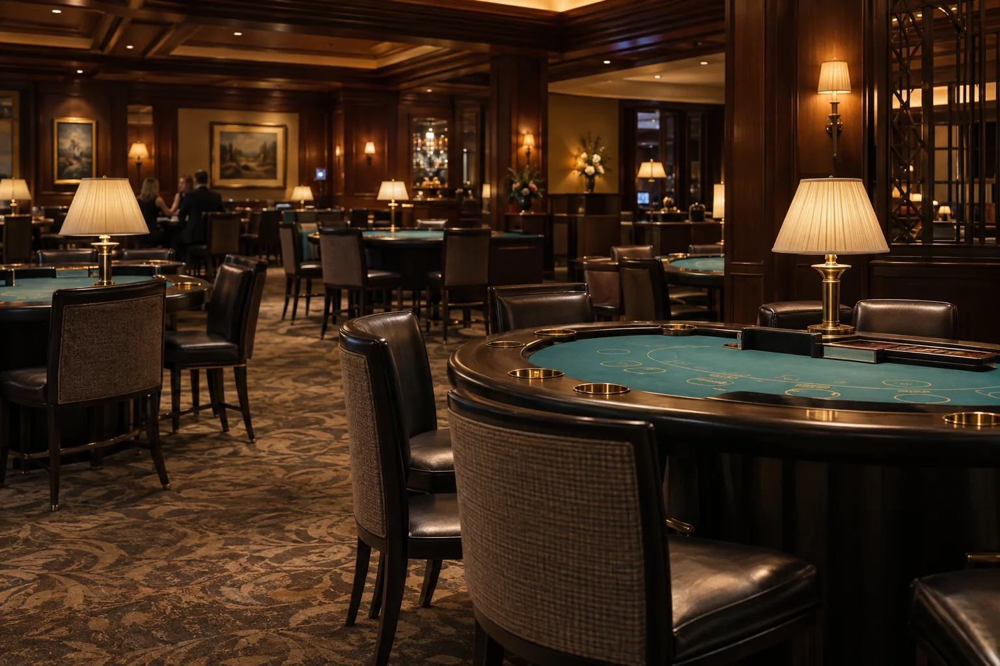

02 / Dentro del casino · Guía independiente
La sala también
tiene un plano.
Un casino no es un ambiente uniforme. Las mesas, los equipos electrónicos, los salones y las zonas de espera pueden tener ritmos distintos dentro del mismo conjunto.
Una entrada, varias transiciones
El primer dato útil es la relación entre la sala y el hotel. Puede existir un ingreso desde la calle, otro desde un corredor interior y un punto de control antes del área de juego. En otros casos, hotel y casino comparten solamente parte de la infraestructura. Ninguna de estas configuraciones se debe dar por supuesta.
La búsqueda 1Win Hotel puede abrir una conversación sobre el formato, pero no confirma cómo es su acceso. Consultá si necesitás atravesar la sala para llegar a un restaurante, si hay un recorrido alternativo y dónde se encuentra la salida hacia la recepción.
Dentro del casino, identificá las transiciones entre sectores. Cambios de iluminación, alfombra o disposición del mobiliario pueden acompañar una zona diferente; no sustituyen la señalización. Los pasillos despejados y las salidas claramente indicadas son cuestiones prácticas que conviene reconocer al llegar.
El acceso al alojamiento y el acceso al juego se deben consultar por separado. Una llave de habitación no demuestra que puedas ingresar a cualquier sala, y una invitación a un evento no implica acceso a todos los espacios del complejo.

Mesas y áreas electrónicas
El sector de mesas
Las mesas agrupan a participantes y personal alrededor de un área común. Su disposición puede ser abierta o estar organizada en pequeños grupos. Esto influye en la conversación, el movimiento de sillas y la facilidad para circular por detrás. El mobiliario no indica por sí solo qué actividades están disponibles en una fecha concreta.
Antes de acercarte, observá la señalización y consultá al personal si hay una zona para mirar sin participar. No presupongas que una silla libre está habilitada ni que todas las mesas siguen el mismo horario. Las reglas y condiciones deben explicarse en el propio lugar; esta guía no ofrece estrategias de apuesta.
El área de equipos electrónicos
Puede organizarse en filas, islas o sectores delimitados. La combinación de pantallas, luces y sonidos suele producir un ambiente diferente al de un vestíbulo. La intensidad depende del diseño y de la ocupación; no es correcto describir todas las salas como ruidosas o tranquilas.
Para una persona que solo quiere atravesar el edificio, importa saber si hay una alternativa a estos sectores. Para quien decide entrar, resulta útil ubicar desde el comienzo una salida, una zona de descanso y una referencia horaria. El diseño del espacio nunca debería reemplazar los límites personales de tiempo y gasto.
Póker, salones y espacios contiguos
Una sala de póker, si existe
El póker puede ocupar una habitación separada o mesas dentro de un área compartida. Su presencia no es universal. Cuando haya una sala específica, preguntá por su funcionamiento y por el impacto de actividades programadas en los accesos cercanos. Un ambiente cerrado puede concentrar conversaciones y circulación alrededor de un horario particular.
Salones de acceso restringido
Algunos establecimientos disponen de salones con condiciones de entrada propias. Que aparezcan en una imagen comercial no significa que formen parte de la experiencia general de un huésped. No hay que confundir privacidad espacial con una mejora garantizada en servicio, tranquilidad o resultados del juego.
Lounges y barras adyacentes
Una barra cercana puede funcionar como punto de encuentro o como un servicio dentro del área de juego. Confirmá si se puede llegar sin ingresar al casino, si tiene condiciones de consumo independientes y si es apropiada para el tipo de encuentro que estás organizando. La ubicación de una mesa de bar no garantiza un ambiente silencioso.
Estas diferencias ayudan a leer una oferta sin imaginar instalaciones que no se han descrito. Si no hay un plano o información suficiente, una pregunta concreta sobre el recorrido suele ser más útil que un adjetivo como “exclusivo”.
Horarios, sonido y convivencia
El horario del hotel no determina el de la sala. Tampoco el cierre de un restaurante garantiza que se reduzca el movimiento en sus corredores. Preguntá por la relación entre los accesos nocturnos, los ascensores de huéspedes y las habitaciones próximas a espacios comunes.
El ruido puede viajar por puertas, pasillos, instalaciones y zonas de entrada. No alcanza con medir la distancia en un plano: una habitación cercana pero bien separada puede comportarse de modo distinto a otra conectada por un corredor de mucho paso. Solicitá información sobre orientación y aislamiento sin aceptar promesas absolutas.
Quienes no participan del juego deberían poder organizar su recorrido con claridad. Si viajás con acompañantes, definan un punto de encuentro fuera de sectores restringidos y confirmen las condiciones de cada espacio. No asumimos una edad ni un requisito de acceso único para toda Argentina.
Las reglas y la regulación del juego dependen de las jurisdicciones provinciales y de CABA. Antes de una visita, consultá la autoridad del lugar concreto. Una mención como 1Win Hotel no constituye una licencia, una autorización ni una garantía sobre un operador.
Fuente: Observatorio Argentino de Drogas: Juegos con dinero (PDF). Consulta: 18 de septiembre de 2026.
La participación es opcional. Para límites personales, pausas, ayuda y recursos de autoexclusión, consultá el apartado de juego responsable.